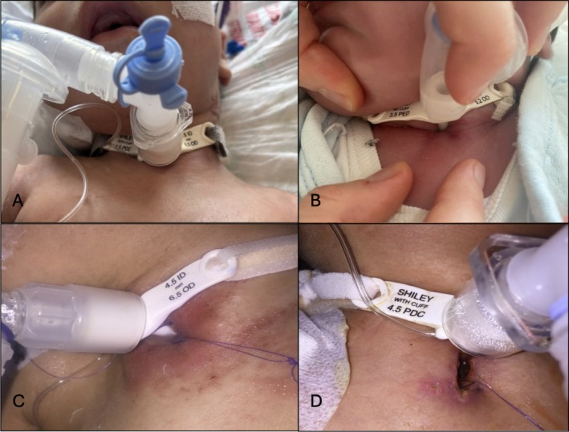
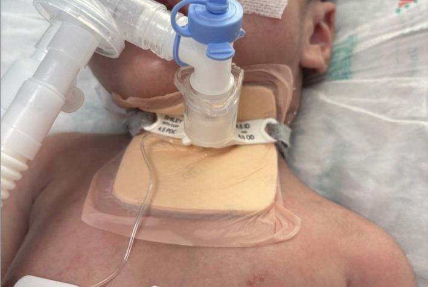

6149 — Loét do áp lực quanh lỗ mở khí quản ở trẻ / Peristomal pressure injury in children with tracheostomy
Tags: pattern:loet-ap-luc pattern:viem-mo-mem vung:khi-quan vung:co score:NPIAP score:Braden-Q protocol:cham-soc-lo-mo-khi-quan protocol:CT-co
Mức chắc chắn (certainty): tổng hợp y văn (literature synthesis) — số liệu lấy từ tổng quan hệ thống + meta-analysis 2026 về dự phòng loét quanh lỗ mở khí quản ở trẻ (Wang Y et al., Front Pediatr 2026, PMC13269278), thử nghiệm ngẫu nhiên có đối chứng 2026 so sánh băng bọt thường với băng bọt tẩm bạc (Bostancı ŞA et al., Laryngoscope Investig Otolaryngol 2026, PMC13176623), hướng dẫn ATS 2025 về chăm sóc trẻ có ống mở khí quản (PMC12618984), và các loạt ca về hẹp/sụp trên lỗ mở (PMC7647974) và rò khí quản–da (PMC11887410). Không có thử nghiệm nào đủ lớn để chốt "băng nào tốt nhất" — bài ghi rõ chỗ nào là suy luận.
Câu chốt của bài: ở trẻ có ống mở khí quản, đỏ da quanh lỗ mở là một tổn thương do áp lực của thiết bị (MDRPI), không phải "kích ứng do dịch" đơn thuần. Tần suất 12,9% khi có chăm sóc chuẩn và tới 22,4–29% khi không dự phòng; 31% trong số đó là độ 3–4. Điều trị khác hẳn nhau theo phân độ NPIAP: độ 1–2 chỉ cần giảm áp lực + kiểm soát ẩm, còn độ 3–4 (lộ sụn khí quản) là nhiễm mô sâu/viêm sụn — phải CT cổ cản quang, cấy và kháng sinh, không chỉ tăng băng.
1. Tổng quan bệnh học – cơ chế hình ảnh: vì sao lỗ mở khí quản là "điểm áp lực" của trẻ
- Bệnh học: đây là tổn thương áp lực liên quan thiết bị y tế (medical device-related pressure injury, MDRPI) — tổn thương da/mô dưới da do áp lực kéo dài của flange ống mở khí quản, dây cố định (ties) và lực cắt (shear) cộng với ẩm từ dịch khí quản. NPIAP/EPUAP xếp chung một hệ phân độ với loét do tư thế.
- TẠI SAO trẻ dễ hơn người lớn (giải phẫu + vật lý):
- Cổ ngắn và đầy → flange tì vào nếp da cổ, diện tiếp xúc nhỏ, áp lực = lực/diện tích tăng.
- Lớp sừng mỏng, mô dưới da lỏng lẻo → cùng một lực, tổn thương sâu hơn ở trẻ nhỏ.
- Dịch khí quản rỉ quanh lỗ mở → da ướt (maceration), ma sát tăng, và men/vi khuẩn làm mất hàng rào.
- Dây cố định phải đủ chặt để không tuột ống → lực kéo thường trực ở sau tai và vùng chẩm, nơi không ai nhìn.
- Bất động (an thần, thở máy, bệnh thần kinh) → không tự đổi tư thế; áp lực vượt áp lực đóng mao mạch (~32 mmHg) trong vài giờ là đủ gây thiếu máu cục bộ.
- Vì sao phân độ NPIAP phản ánh đúng độ sâu giải phẫu: độ 1 = ban đỏ không mất khi ấn (non-blanchable) — mao mạch bị chèn nhưng chưa mất da; độ 2 = mất da một phần, còn trợt nông; độ 3 = mất toàn bộ lớp da, thấy mỡ dưới da; độ 4 = mất toàn bộ mô, lộ cân/cơ/sụn/xương. Ở vùng quanh lỗ mở khí quản, "xương" chính là vòng sụn khí quản — nên một ổ loét "trông nông" mà thấy sụn trắng đã là độ 4, với nguy cơ viêm sụn, rò khí quản–da, hẹp khí quản.
- Chỉ số nguy cơ định lượng (Braden Q, 7 mục, mỗi mục 1–4, tổng 7–28): ≤ 9 = nguy cơ rất cao; 10–12 = cao; 13–15 = trung bình; ≥ 16 = không nguy cơ (theo thử nghiệm 2026, PMC13176623). Đánh giá ngày 1–7–14–21 sau mở khí quản.
- Số liệu cốt lõi cần nhớ:
| Bối cảnh | Con số | Nguồn |
|---|---|---|
| Tổn thương da quanh lỗ mở khi có chăm sóc chuẩn | 12,9% | PMC13269278 |
| Không dự phòng | 22,4%, trong đó 31% độ 3–4 | PMC13269278 |
| Loạt 65 trẻ | tổn thương tại chỗ mở 29% | PMC13176623 |
| RCT 50 trẻ: băng bọt thường vs bọt tẩm bạc | 12% vs 8%, p = 1,000 (khác biệt không có ý nghĩa) | PMC13176623 |
| Băng bọt trong quy trình chăm sóc | giảm biến chứng 22% → 9,9% | PMC13176623 (dẫn McEvoy) |
| Gói chăm sóc chuẩn hóa | loét 8,1% → 0,3% | PMC13176623 (dẫn Boesch) |
| Dây Velcro so với dây vải twill | RR 0,26 (95% CrI 0,07–0,94), giảm ~74% biến cố da | PMC13269278 |
| Xác suất tốt nhất trên SUCRA | bọt tẩm bạc 97,6% — nhưng mọi so sánh trực tiếp không có ý nghĩa | PMC13269278 |
2. Mẫu hình + chẩn đoán phân biệt theo vị trí (gamut)
- Theo hình thái — "đỏ, trợt, lồi, sâu":
- Chỉ đỏ, ấn mất → kích ứng/ẩm, chưa phải loét; đỏ ấn không mất → NPIAP độ 1.
- Trợt nông, rỉ dịch → độ 2; nếu bờ rõ, có vảy vàng → thêm viêm da do dịch (irritant contact dermatitis).
- Mô đỏ tươi lồi, dễ chảy máu → mô hạt (granulation) — phản ứng lành, không phải nhiễm trùng, nhưng là dấu hiệu ma sát/ẩm kéo dài.
- Ổ sâu, đáy trắng/xám, thấy sụn → độ 3–4, phải loại trừ viêm sụn/áp-xe.
- Theo vị trí — nơi áp lực "ẩn":
- Dưới flange (giờ 6) — nơi dịch đọng + flange tì: hay gặp nhất.
- Sau tai và vùng chẩm — dây cố định: không thấy khi trẻ nằm ngửa, phải lật đầu kiểm.
- Bờ trên lỗ mở — đầu ống/đầu hút (suction catheter) cọ xát.
- Ngực trước — dây cố định bản rộng gây ban ở vùng xa.
- Mnemonic MIST: Moisture (dịch/ẩm) · Interface pressure (flange/ống) · Shear–friction (dây, đầu hút) · Ties/tube (loại dây và cỡ ống).
3. Bảng so sánh phân biệt (ma trận đối chiếu)
| Thực thể (entity) | Hình ảnh điển hình (lâm sàng/US/CT) | Chốt vào (rule-in) | Chốt loại (rule-out) | Gợi ý xác nhận |
|---|---|---|---|---|
| MDRPI NPIAP độ 1–2 | Đỏ ấn không mất (độ 1) hoặc trợt nông (độ 2) đúng vòng quanh flange; không sốt | Vị trí khớp điểm tì + ấn không mất + không mủ | Đỏ lan toả có vảy, ngứa, bờ mờ → viêm da tiếp xúc; sốt/sưng → nhiễm sâu | Nhìn + ấn 2 giây; chụp ảnh ngày 1–7–14–21–30 |
| MDRPI độ 3–4 (lộ sụn) | Ổ sâu, đáy trắng/xám; thấy vòng sụn khí quản; có thể rò khí khi ho | Sụn lộ + ổ sâu + đau/sưng | Chỉ trợt nông, đáy hồng → độ 2 | CT cổ cản quang lát ≤ 1 mm; hội chẩn TMH; cấy |
| Viêm da tiếp xúc/kích ứng dịch | Ban đỏ lan rộng, bờ không đều, vùng da tiếp xúc dịch; trẻ ngứa, quấy | Bờ lan theo dòng dịch + không ấn khu trú | Đỏ khu trú đúng điểm tì, ấn không mất → loét độ 1 | Lâm sàng; thử che chắn ẩm |
| Nhiễm Candida quanh lỗ mở | Đỏ tươi + sẩn mủ vệ tinh, vảy trắng, ẩm; hay sau kháng sinh | Sẩn vệ tinh + vảy trắng | Tổn thương khu trú hình vòng → áp lực | Soi/KOH; cấy nấm |
| Mô hạt (hypergranulation) | Mô đỏ tươi lồi trên mức da, dễ chảy máu khi chạm; không sốt | Lồi quá mặt da + chảy máu khi lau | Ổ lõm/đáy trắng → loét sâu | Lâm sàng; loại trừ áp-xe |
| Áp-xe/viêm mô sâu quanh lỗ mở | Sưng, nóng, đau, sốt; US: ổ giảm âm có viền; CT: khí trong mô mềm, dày cân, tụ dịch viền ngấm | Sốt + sưng + khí trong mô mềm | Chỉ đỏ da, không sốt, không khí → MDRPI đơn thuần | CT cổ cản quang; US đầu dò ≥ 10 MHz; cấy mủ |
| Rò khí quản–da (tracheocutaneous fistula) | Sau rút ống: lỗ rò còn thông, sủi bọt khí khi ho/nói, chảy dịch | Còn thông sau 1,5 tháng; thử xanh methylen/nước sủi bọt | Lỗ đóng dần, không sủi bọt → lành | Nội soi khí quản; CT cổ khi cần |

Bốn mức độ trong cùng một nghiên cứu nhi: ảnh A–D cho thấy "độ sâu" quyết định xử trí, không phải diện tích. Hình từ Laryngoscope Investig Otolaryngol 2026 (PMC13176623), Fig. 3, CC BY-NC-ND 4.0 — giữ nguyên bản, không crop/ghép.Ba dấu hiệu định lượng dùng ngay tại giường
- Nghiệm pháp ấn (blanch test): ấn bằng ngón tay/đầu đo trong 2 giây rồi thả — mất màu rồi hồng lại = chưa loét; giữ đỏ = độ 1.
- Độ ẩm băng: thay khi băng đạt 75% bão hoà dịch; băng còn khô và da không xấu thì để tới 7 ngày (quy trình của RCT, PMC13176623).
- Braden Q: tổng 7–28; ≤ 15 là có nguy cơ (trung bình/cao/rất cao), ≥ 16 là không nguy cơ.
4. Protocol chụp + hệ phân độ/điểm chuẩn hóa
- Chăm sóc chuẩn (theo quy trình RCT, PMC13176623): rửa lỗ mở bằng nước muối sinh lý, lau khô, đặt băng dưới flange; dây Velcro có đệm bọt; cắt chỉ giữ (stay suture) ngày 7; đổi ống lần đầu ngày 7; giữ đầu–cổ trung tính ở trẻ thở máy; đánh giá da hằng ngày bởi điều dưỡng + bác sĩ TMH; theo dõi 1 tháng.
- Phân độ: NPIAP 2016 — độ 1 ban đỏ không mất; độ 2 mất da một phần; độ 3 mất toàn bộ da (thấy mỡ); độ 4 mất toàn bộ mô (cân/cơ/sụn/xương); thêm không phân độ được (unstageable) và nghi tổn thương mô sâu.
- Khi nào chụp — nguyên tắc "da là lâm sàng, hình ảnh là biến chứng":
- Không chụp cho độ 1–2 đơn thuần.
- Siêu âm (đầu dò linear 10–15 MHz, độ xuyên ~3–4 cm) khi có sưng khu trú: phân biệt mô hạt/tổ chức hoá với ổ tụ dịch/áp-xe; Doppler giúp thấy tăng sinh mạch của mô hạt so với ổ hoại tử không mạch.
- CT cổ cản quang, lát ≤ 1 mm khi: sốt + sưng cổ, khí trong mô mềm, độ 3–4 lộ sụn, nghi viêm trung thất hoặc rò khí quản–thực quản. Cần tìm: tụ dịch viền ngấm, khí ngoài lòng khí quản, mất liên tục sụn, dày mô mềm trước khí quản.
- Nội soi khí quản khi nghi sụp trên lỗ mở (suprastomal collapse) — biến chứng muộn 35,1% trong loạt 148 trẻ (PMC13040597) — hoặc trước khi cân nhắc rút ống.
- Đo lỗ mở: ghi đường kính lỗ (mm), cỡ ống, khoảng cách flange–da; hẹp lỗ mở là chỉ định nong/revise, không phải "chờ lành".
- Khi nào can thiệp sâu (suy luận từ dữ liệu, không có RCT):
- Độ 3–4/áp-xe: dẫn lưu + kháng sinh theo cấy; không băng kín vì bít đường thoát dịch.
- Sụp trên lỗ mở: cắt mô xơ, ghép sụn sườn, hoặc cắt nối khí quản một thì tùy hình thái lỗ mở (loạt 18 trẻ, PMC7647974).
- Rò khí quản–da: 36,8% trong loạt nhỏ phải đóng bằng phẫu thuật; thời gian có ống > 12 tháng là yếu tố dự báo (p = 0,045); 83,3% ca tự đóng xảy ra trong 1,5 tháng đầu (PMC11887410) — nên theo dõi ít nhất 1,5–3 tháng trước khi quyết định mổ (suy luận).

Cách đặt băng đúng: băng bọt dưới flange, chừa lỗ cho ống, dây Velcro có đệm. Đây là "giảm áp lực" — không phải băng kín lỗ mở. Hình từ Laryngoscope Investig Otolaryngol 2026 (PMC13176623), Fig. 2, CC BY-NC-ND 4.0 — nguyên bản.flowchart TD
A["Đánh giá da quanh lỗ mở hằng ngày + Braden Q"] --> B{"Phân độ NPIAP"}
B -->|"Độ 1"| C["Giảm áp lực: băng bọt + Velcro có đệm; kiểm ẩm"]
B -->|"Độ 2"| D["Băng bọt hoặc bọt bạc nếu nhiều dịch; đánh giá lại 48–72 giờ"]
B -->|"Độ 3–4 / thấy sụn"| E["CT cổ cản quang + cấy + hội chẩn TMH"]
E --> F{"Sốt, khí trong mô mềm, sưng cổ?"}
F -->|"Có"| G["Dẫn lưu + kháng sinh; loại trừ viêm trung thất"]
F -->|"Không"| H["Chăm sóc ẩm + giảm áp lực; chụp lại nếu xấu hơn"]
C --> I["Đánh giá lại ngày 7–14–21–30"]
D --> I
5. Biến thể bình thường và cạm bẫy
- "Đỏ quanh lỗ mở" không đồng nghĩa loét: ngay sau mổ, bờ lỗ mở sung huyết 1–2 tuần là lành thường; chỉ gọi loét khi ấn không mất hoặc có mất da.
- Da sẫm màu: ban đỏ khó thấy — dùng án + so màu vùng đối xứng, sờ nhiệt độ, hỏi đau; đừng chờ "thấy đỏ".
- Băng che mất tổn thương: phải nâng flange/nhấc băng mỗi ngày; ảnh chụp ngày 1–7–14–21–30 để so (đúng thiết kế RCT).
- Nhầm mô hạt với nhiễm trùng: mô hạt đỏ tươi, mềm, chảy máu khi lau nhưng không sốt, không sưng lan; cắt mô hạt "cho sạch" có thể làm hẹp lỗ mở.
- Băng kín lỗ mở: đặt băng kín trên lỗ làm ứ dịch, tăng nhiễm, và có thể che dấu sụp đường thở; băng chỉ nằm dưới flange, chừa lỗ.
- Sụn lộ trông như "mảng trắng" — dễ bị cắt lọc như mô hoại tử; không đụng vào sụn khi chưa có CT/hội chẩn.
- Chảy máu nhỏ (sentinel bleed) từ lỗ mở ở trẻ có ống lâu ngày: phải lo rò động mạch vô danh (innominate artery fistula) — CTA khẩn, không chỉ băng cầm máu.
- Dấu đầu hút: vết xước thẳng/hình cung ở bờ trên lỗ mở do đầu catheter — dấu hiệu ma sát, xử trí bằng kỹ thuật hút, không phải loét áp lực điển hình.
6. Tự lượng giá — Blind Quiz
Ca 1 — Trẻ 14 tháng, ngày thứ 3 sau mở khí quản, đang thở máy. Nhìn ảnh, mô tả trước khi mở đáp án.
- Gợi ý lâm sàng: chưa sốt, da quanh lỗ mở hồng nhẹ, dịch khí quản nhiều.
- Câu hỏi: (1) Băng đang đặt ở đâu so với flange? (2) Mục đích chính là gì? (3) Ba việc phải làm mỗi ngày?
Bấm để hiện đáp án
- Findings: băng bọt nằm dưới flange, chừa lỗ cho ống; dây Velcro có đệm bọt; màng trong suốt giữ ẩm. Không có ổ loét, không mủ.
- Chẩn đoán: chăm sóc dự phòng MDRPI — giảm áp lực + hút ẩm + cố định chắc nhưng không siết.
- Mỗi ngày: (1) nhấc băng, đánh giá NPIAP + Braden Q; (2) rửa nước muối, lau khô, thay băng khi 75% bão hoà hoặc tối đa 7 ngày; (3) kiểm sau tai/chẩm và độ chặt dây.
- Nguồn: Bostancı ŞA et al., Laryngoscope Investig Otolaryngol 2026 (PMC13176623), Fig. 2, CC BY-NC-ND 4.0.
Ca 2 — Bốn trẻ khác nhau, cùng nhìn vòng quanh lỗ mở. Phân độ A–D.
- Gợi ý: A là trẻ được chụp khi da còn nguyên; B–D là các mức nặng dần.
- Câu hỏi: mỗi ảnh là độ mấy? Ảnh nào cần CT cổ?
Bấm để hiện đáp án
- A — độ 0/da lành: không ban đỏ, không trợt.
- B — độ 1: ban đỏ không mất khi ấn, da còn nguyên.
- C — độ 2: mất da một phần, đáy hồng ướt, chưa thấy mỡ/sụn.
- D — độ 4: ổ sâu, mất toàn bộ mô, đáy trắng/xám — tương ứng lộ sụn khí quản trong vùng này.
- Cần CT cổ cản quang: D (và mọi độ 3–4, hoặc độ 2 kèm sốt/sưng/khí trong mô mềm). Ảnh D có nguy cơ viêm sụn, áp-xe, hẹp khí quản.
- Lưu ý: hình không có "độ 3" riêng — đừng suy ra chỉ có 4 mức; NPIAP có cả độ 3, không phân độ được, nghi tổn thương mô sâu.
- Nguồn: Bostancı ŞA et al., Laryngoscope Investig Otolaryngol 2026 (PMC13176623), Fig. 3, CC BY-NC-ND 4.0.
Ca 3 — Trẻ 3 tuổi, 6 tháng sau mở khí quản, sốt 38,8 °C, sưng nề quanh lỗ mở, da đỏ tím, ấn đau. Siêu âm thấy ổ giảm âm 12 mm có viền tăng sinh mạch.
- Câu hỏi: chẩn đoán nghĩ đến? Bước tiếp theo? Điều không được làm?
Bấm để hiện đáp án
- Nghĩ: áp-xe/viêm mô sâu quanh lỗ mở khí quản trên nền MDRPI (không phải "loét độ 2 bội nhiễm đơn thuần").
- Bước tiếp: CT cổ cản quang lát ≤ 1 mm tìm khí trong mô mềm, dày cân, mất liên tục sụn, lan trung thất; cấy mủ + máu; hội chẩn TMH; kháng sinh phổ rộng ban đầu.
- Không được: băng kín/ép chặt lên ổ (bít đường thoát, đẩy nhiễm vào trung thất) và nạo/cắt sụn khi chưa đánh giá hình ảnh.
- Vì sao: nhiễm vùng này có đường lan trực tiếp xuống trung thất; trẻ nhỏ thành ngực mỏng, khoang cổ chật — không có "ngưỡng an toàn" theo kích thước ổ.
- Nguồn số liệu nền: PMC13269278, PMC13176623.
Bài liên quan chéo
- 6100 – Chăm sóc và cai ống mở khí quản ở trẻ — quy trình chăm sóc, cai ống
- 6124 – Nhiễm trùng liên quan ống mở khí quản ở trẻ — nhiễm khuẩn đường thở
- 6101 – Xẹp phổi tái diễn một bên ở trẻ — biến chứng đường thở
- 3049 – Hẹp thanh khí quản tái phát sau tạo hình ở trẻ — hẹp/sụp đường thở sau mở khí quản
- 932 – An toàn bức xạ CT/DSA — tối ưu liều khi phải chụp CT lặp lại
Ảnh
6149_phan-do-NPIAP_Clinical_PMC13176623-Fig3.jpg,6149_bang-gac-duoi-cannula_Clinical_PMC13176623-Fig2.jpg— nguồn + giấy phép từng ảnh:images/CREDITS.md.- Cả hai ảnh là bệnh nhi trong nghiên cứu RCT (0–18 tuổi); ảnh CC BY-NC-ND giữ nguyên bản, không crop/ghép.
Không dùng để chẩn đoán độc lập khi chưa có người hướng dẫn.